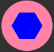
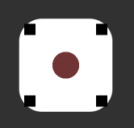
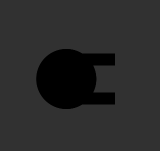
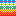

Welcome into SelfDefender Wiki
SelfDefender is a game of defending your main base against waves of enemies. It can be downloaded here.
 A basic single-barrel weapon that allows you to easily and effectively kill enemies.(low efficiency) It costs 50 Credits
A basic single-barrel weapon that allows you to easily and effectively kill enemies.(low efficiency) It costs 50 Credits
 The Rocket Launcher is the perfect tool for people who like to deal high damage (low-medium efficiency). Cost of 300 Credits
The Rocket Launcher is the perfect tool for people who like to deal high damage (low-medium efficiency). Cost of 300 Credits
Moneynator creates Credits, but not many parts in stock to build it, so only five are for one game. (Super high efficiency) Cost 10 Credits
Upgrader increases the efficiency of parts by allowing you to assemble better and more powerful weapons (+/- efficiency). Cost 675 Credits
The mk2 turret is an upgraded version of the mk1 turret. He can fire more rounds through two barrels. (Medium efficiency) Cost 1000 Credits
Similar in construction to a regular launcher - the Mk2 Rocket Launcher fires 4 rockets, but has a long reload. (Medium-high efficiency) Cost 1250 Credits
The hospital is perfect for people who have problems with a small amount of life, as the only one that produces spare parts for the base, although it takes him a little. (Very low efficiency) Cost 600 Credits
CodeBreaker is a weapon that allows you to send an impulse that destroys enemies from within once every four waves. (Super high efficiency) Cost 1750 Credits